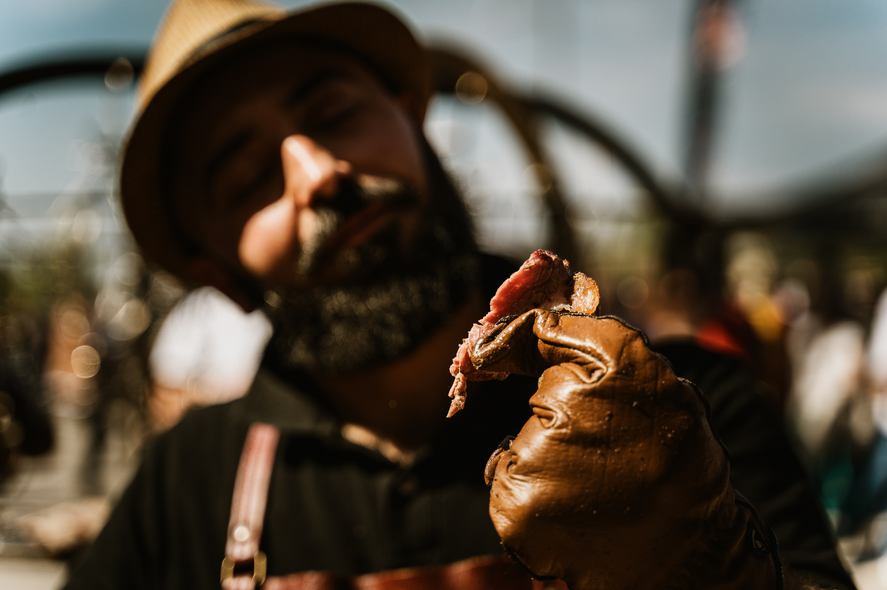
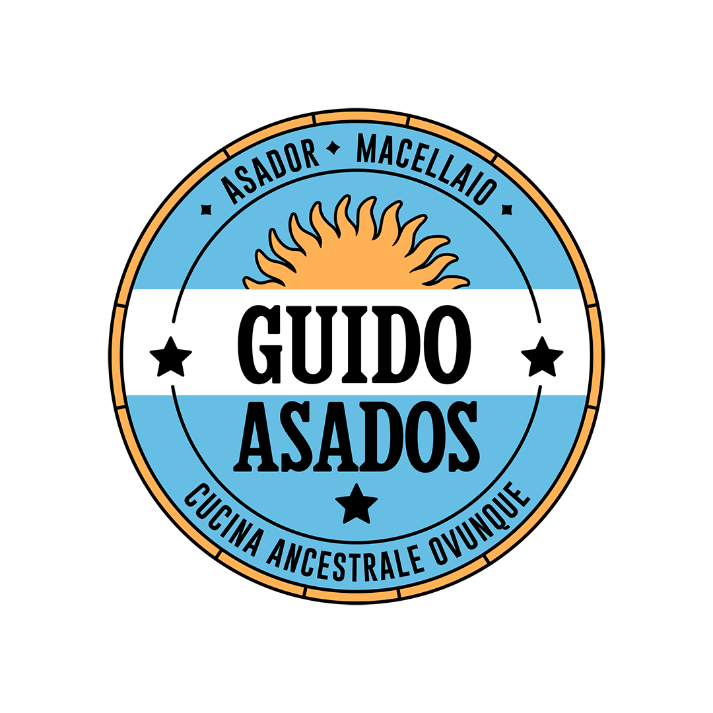

Quanto può essere bello cucinare ?
Quanto tempo merita stare dietro il fuoco per avere un risultato
decente?
La Gabbia Grigliatora ha tutta la potenzialità di essere il vostro prossimo scalino verso il paradiso della goduria. La cottura appesa è la nuova sfida di tanti e qui potete trovare diversi tipi di carni, verdure e frutti profumati con il carbone e la legna. Nato in Argentina ma trapiantato in Toscana, da tanti anni facendo il macellaio e l’asador per ogni tipo di festa, Guido Asados vi condurrà in un percorso di sola andata verso i piaceri culinari, spiegandovi da dove ricava i tagli argentini e come vengono cucinati secondo la tradizione sudamericana, con una colorita selezione di contorni e dolci.
"Per noi di Sartoria il viaggio più incredibile è stato quello fatto con Guido, un VERO ASADOR, nonché squisita persona. Un viaggio immaginario nella pampas Argentina, tra gli avvincenti Gauchos al galoppo; una sorta di “ pellegrinaggio” che ha stravolto completamente il nostro concetto legato al FUOCO.
"L’attesa, l’attenzione, lo scoppiettio della legna, il danzare intorno a quella gabbia come al “Balletto del Teatro della scala”, da un lato hanno completato il nostro percorso di costruzione con LA GABBIA, progettato e realizzato con Guido, dall’altro ci hanno fatto apprendere tecniche di cottura nuove, arricchendo e influenzando il nostro bagaglio personale".
"La semplicità con cui tratta gli ortaggi, mai banale, la cura nel lavorare un pezzo di carne, nel rispetto dell’animale e di ogni sua parte, la pazienza e la maestria nelle cotture, attraverso la percezione del vento e dell’intensità del calore ci hanno letteralmente affascinato".
"I lunghi racconti delle domeniche in famiglia, parlano di un “Asado” che prima di diventare una tecnica è prima di tutto TRADIZIONE".
"Questo concetto ha rafforzato in noi l’idea che Sartoria del Bbq, non è soltanto costruzione ed Eventi, ma il simbolo, per molti, di una Puglia che affonda le radici in un passato zuppo di storia, tra camini e lunghe preparazioni, terracotte, ortaggi lasciati cuocere nelle braci esauste dopo gradi cotture, fuoco e passione; Guido ha contaminato i nostri costumi ed usanze facendoci sentire vicini alla sua terra".
"I suoi principi nonché i suoi forti valori come l’ AMICIZIA, la FAMIGLIA e il RISPETTO, fanno di lui una persona meravigliosa. Tanta stima e affetto per Guido, il nostro amico asador".